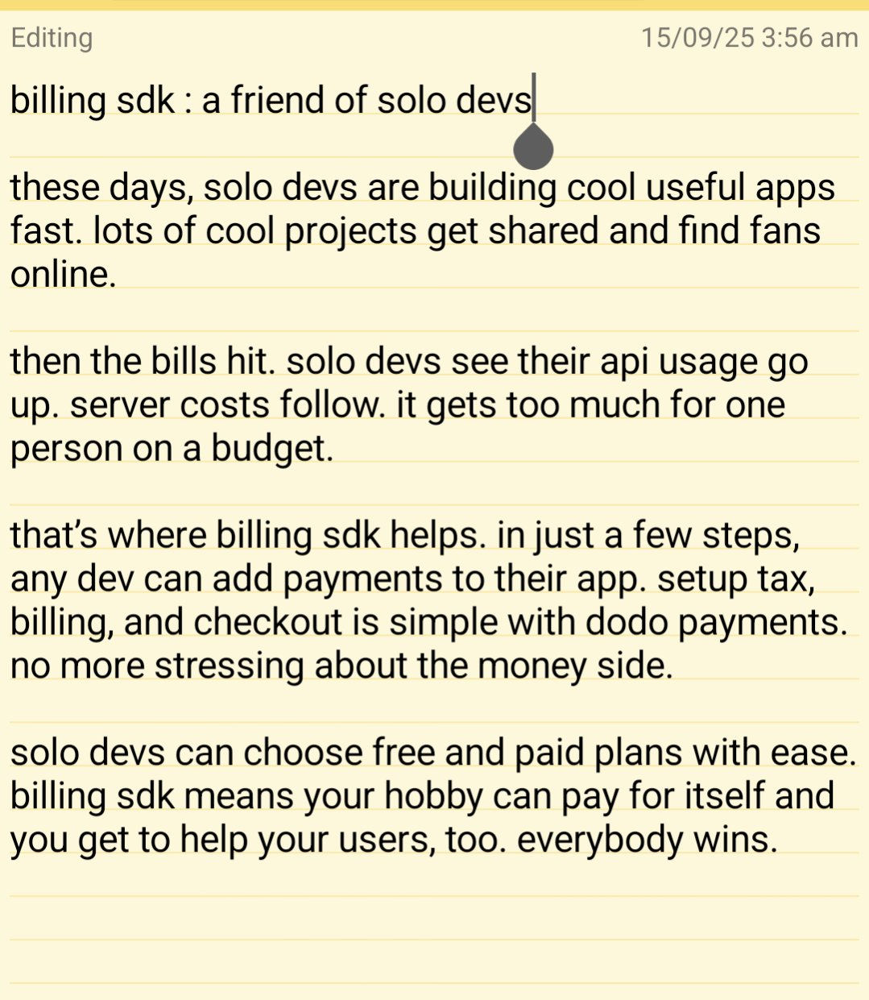

Using Dodo's Adapter to Handle Payments in Your AI SaaS
TL;DR: Dodo's adapter is a pre built adapter that let you implement your first global checkout or subscription in minutes, not weeks.
Originally Blog was posted on Paragraph
When you’re building an AI powered SaaS, you dream about users scaling up. Not about the infrastructure headaches that come with them. The last thing on your mind? Integrating payments, especially if you want to serve users everywhere. For most indie founders and engineers, managing payments feels like wrestling with APIs, keeping up with local payment methods, and stressing about compliance or failed transactions.
But you’re writing code to solve real problems, should collecting money for your hard work really be this complicated? That’s where Dodo’s adapter changes the game. Instead of spending weeks piecing together payment flows, hunting for tax libraries, or coding yet another subscription handler, you can drop in Dodo’s adapter and focus on what your app does best.
Global Checkout in Minutes
Dodo’s pre built adapters (Node, Python, Next.js take your pick) let you implement your first global checkout or subscription in minutes, not weeks. Just install, configure your keys, and connect. Better yet, Dodo abstracts away the gnarly details, supporting 25+ global and local payment options so you don’t lose users to “unsupported payment” errors.
Automated Metering & Compliance
Even if your AI app tracks variable usage, think number of API calls, storage, or events. The Dodo Billing SDK can meter and bill automatically, all while managing tax and compliance behind the scenes. That means you grow from prototype to production without hitting a wall, trusting that payments and legal are just... handled.
Startups are about momentum. Don’t let money be yet another blocker. Let Dodo handle the boring part, so your code can change the world.
Comments